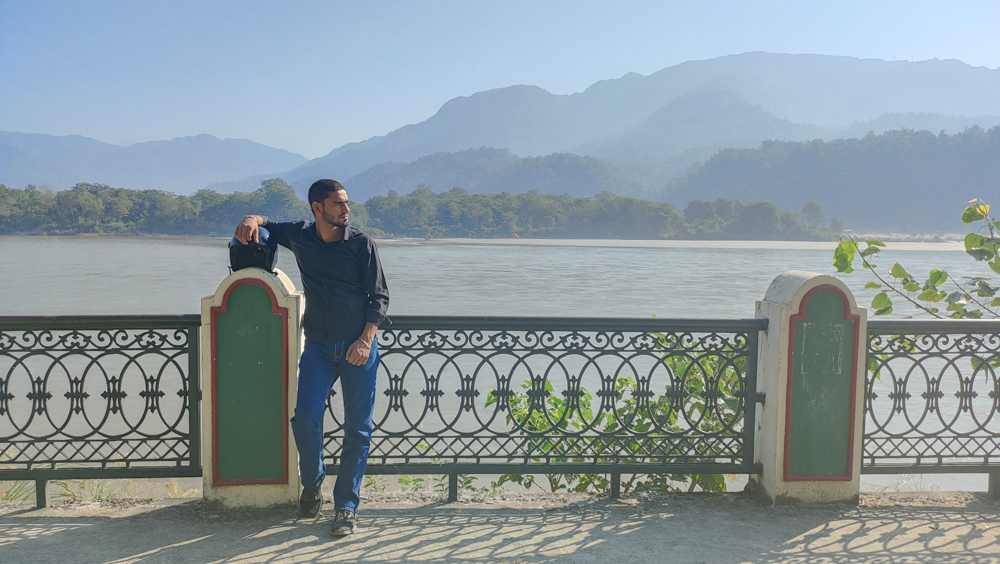

Mussoorie - The Queen of the Hills
Our recent trip to Mussoorie, the enchanting queen of the hills, left us spellbound with its breathtaking beauty and serene ambiance. Nestled in the heart of Uttarakhand, this picturesque hill station offered us a perfect escape from the hustle and bustle of city life. Day 1: Arrival in Mussoorie We set off early in the morning, excited about our journey. The scenic drive through winding roads and lush green hills was mesmerizing. Upon arrival, we checked into our cozy hotel, which boasted stunning views of the surrounding mountains. Our first stop was Mall Road, the main promenade bustling with life. We strolled along the street, enjoying the vibrant atmosphere and picking up some souvenirs. We indulged in some delicious local snacks, including Aloo Tikki and Chole Bhature, at a charming little eatery. Day 2: Exploring the Attractions The next day, we embarked on a day filled with adventure. Our first destination was Gun Hill, accessible by a thrilling cable car ride. The panoramic views from the top were simply breathtaking. We savored some hot Maggi noodles while soaking in the scenery. Afterward, we visited the iconic Kempty Falls. The sound of cascading water and the cool breeze was refreshing, and we even took a dip in the natural pool. It was a fantastic way to embrace nature! In the evening, we ventured to Lal Tibba, the highest point in Mussoorie. Watching the sunset from here was a magical experience, with hues of orange and pink painting the sky. We enjoyed a peaceful moment, reflecting on our day. Day 3: Cultural Immersion Our final day was dedicated to immersing ourselves in the local culture. We visited the Christ Church, one of the oldest churches in North India, known for its beautiful stained glass windows. The serene environment was perfect for a moment of contemplation. Next, we headed to Camel’s Back Road for a leisurely walk. The road is known for its camel-shaped rock formation and offers stunning views of the Doon Valley. We captured countless photographs and made lasting memories. As our trip came to an end, we couldn't help but feel a sense of reluctance to leave this charming hill station. Mussoorie has a unique charm that lingers in your heart, making you want to return time and again. Conclusion Our trip to Mussoorie was an unforgettable experience filled with adventure, beauty, and relaxation. The combination of stunning landscapes, rich history, and warm hospitality made it a perfect getaway. We can’t wait to plan our next visit to this beautiful destination!
